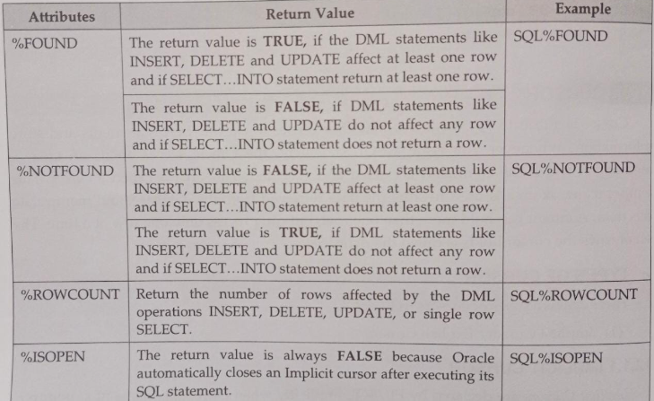
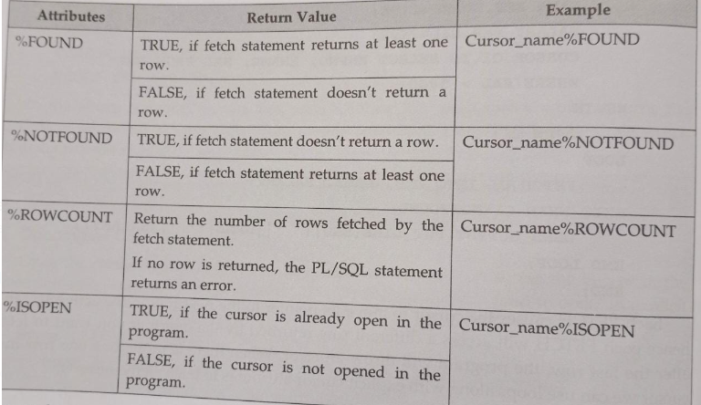
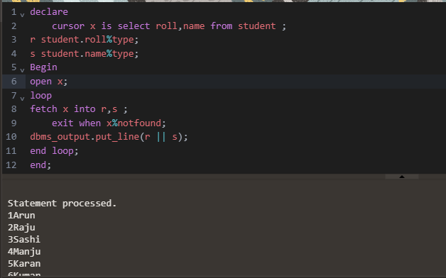
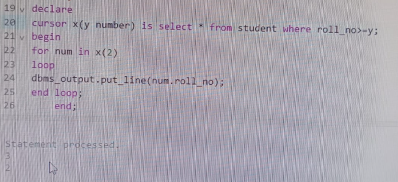

There are Two types of cursors in PL/SQL:-
Implicit cursors are declared by PL/SQL implicitly when DML statements like, INSERT,UPDATE,DELETE statements are executed.They are also declared when a SELECT statement that returns just one row is executed.
Oracle provides few attributes for implicit cursor called as implicit cursor attributes to check the status of DML operations.

Example:-
DECLARE
sname student.name%type;
BEGIN
select name into sname from student where roll=1;
IF SQL%FOUND THEN
DBMS_OUTPUT.PUT_LINE(sname);
ELSe
DBMS_OUTPUT.PUT_LINE('Data not found');
END IF;
END;
Output:-

2.EXPLICIT CURSUR
Explicit Cursors are declared explicitly by the user, along with other identifiers to be used in a PL/SQL block. These are also known as user-defined cursors, defined in the DECLARE section of the PL/SQL block. They must be declared when you are executing a SELECT statement that returns more than one row. Even though the cursor stores multiple records, only one record can be processed at a time, which is called as current row.
CURSOR MANIPULATION:-
Cursor manipulation is done through the DECLARE, OPEN, FETCH and CLOSE statements. These statements are explained below:
Declaring an Explicit Cursor:-
While declaring a cursor, cursor name is given and also defines the structure of the query to be performed within it. The CURSOR statement is used to declare explicit cursor.
Syntax:-
CURSOR < cursor_name > IS < select_statements >;
Opening an Explicit Cursor:-
Once the cursor is declared in the declaration section, we can access the cursor in the execution section of the PL/SQL program. The OPEN statement is used to open an explicit cursor
Syntax:-
OPEN < cursor_name >;
Retrieving Individual row/Fetching Data from the Explicit Cursor:-
After the cursor is opened, the current row is loaded into variables. The current row is the row at which the cursor is currently pointing. The transfer of data into PL/SQL variables is done through FETCH statement.
Syntax:-
FETCH < cursor_name > into < variables >;
Closing an Explicit Cursor:-
Close the cursor after completing the processing of the SELECT statement. This step allows the cursor to be reopened, if required. Therefore, you can establish an active set several times. The CLOSE statement is used to close an explicit cursor.
Syntax:-
CLOSE < cursor_name > >;
EXPLICIT CURSUR ATTRIBUTES:-
Oracle provides some attributes known as Explicit Cursor Attributes to control the data processing while using cursors. We use these attributes to avoid errors while accessing cursors through OPEN, FETCH and CLOSE statements.
These are the attributes available to check the status of an explicit cursor.
(i) %FOUND
(ii) %NOTFOUND
(iii) %ROWCOUNT
(iv) %ISOPEN

Examples:-
declare
cursor x is select roll, name from student ;
r student.roll%type;
s student.name%type;
begin
open x;
loop
fetch x into r,s;
exit when x%notfound;
dbms_output.put_line(r || s);
end loop;
end;

CURSORS FOR LOOP:-
The Cursor FOR LOOP implicitly declares its loop index as a record of type %ROWTYPE, opens a cursor, repeatedly fetches rows of the values from the active set into fields in the record, and then closes the cursor when all rows have been processed or when the EXIT command is encountered.
Syntax:-
FOR < INDEX > IN < CURSOR_NAME > LOOP
< STATEMENTS >;
CURSORS WITH PARAMETERS:-
Parameters allow values to be passed to a cursor when it is opened, and used within the query when it executes. Using parameters explicit cursor may be opened more than once in a block, returning a different active set each time.
Each formal parameter in the cursor declaration must have a corresponding actual parameter in the OPEN statement. Parameter data types are the same as those for scalar variables, but you do not give them sizes. The parameters are treated like PL/SQL variables within the cursor's query expression.
Syntax:-
CURSOR CURSOR_NAME >
[(PARAMETERS_NAME DATATYPE,....)]
IS
select_statements;
Example
:-declare
curson x(y number) is select from student where roll_no>=y;
begin
for num in x(2)
loop
dbms_output.put_line(num. roll no);
end loop;
end;
